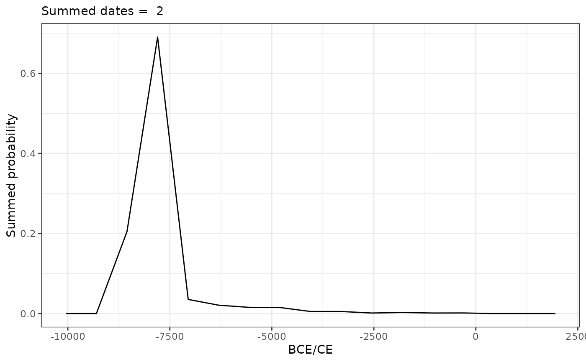

R/shoredate_sumplot.R
shoredate_sumplot.RdFunction to plot the sum of the probabilities of multiple shoreline dates as
resulting from running sum_shoredates().
shoredate_sumplot(shoredates_sum, sample_size = TRUE)A line plot showing the provided summed probability distribution.
# Create example points
target_points <- sf::st_sfc(sf::st_point(c(538310, 6544255)),
sf::st_point(c(538300, 6544250)))
# Set correct CRS
target_points <- sf::st_as_sf(target_points, crs = 32632)
# Reduce date resolution with cal_reso and elevation_reso for speed
target_dates <- shoreline_date(target_points,
elevation = c(65, 70),
elev_reso = 10,
cal_reso = 750)
# Find summed probability
target_sum <- sum_shoredates(target_dates)
# Call to plot
shoredate_sumplot(target_sum)
